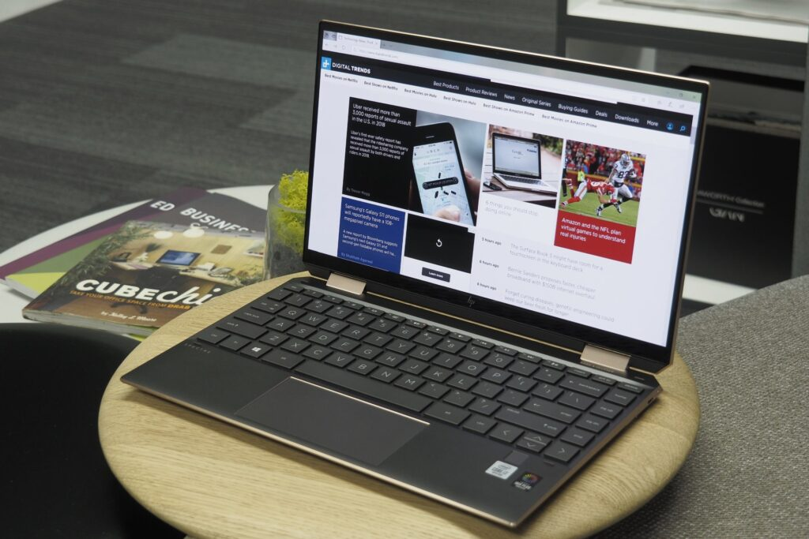
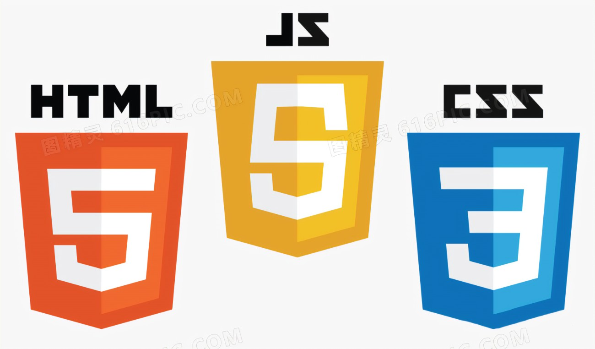

A little bit about Me
Who am I?
HI! I am Ryan Nicholas Purba, I am an University Student and a Web Developer. I live in Indonesia, in West Java Province. I am studying in Gunadarma University as Informatics Engineering Student.
What I do?
I've been practicing Frontend Web Development with HTML, CSS, and JS and alrady posted few of my projects, if you want to see it, you can visit my GitHub repository here
Why I do it?
I do it because I have a passion to make something useful and can show my skill value to everyone through my laptop. Especially internet can be seen everywhere and made our life much easier, where anyone can get their information, things, and education only through their computer or laptop.
My Web Development Story
When I just being an Informatics Engineering Student in Gunadarma University, I do not know much about Programming or Coding. But then I introduced my first programming language, Java. Java gave me some glimpse how Programming and Coding looks like, how I feel when I put my codes and the syntax into the screen, and got the first satisfaction after running the program and it works
However, from day to day I felt like I wanted to know how I can applicate this in real life? What this Programming can do or make real life result? So I decided to search some Programmers portfolio and their awesome works, I also found out that one of my friends already made his own Web Projects. So, I asked him how he did it, what tools he used, and where he learned that skill
Before I learned from online courses such as Codepolitan and Udemy, I watched some YouTube tutorials about Web Development, including "1 Hour HTML, CSS, and JS Programming" by freeCodeCamp. But I still got struggled to make my own website, so I decided to take courses and I can make my own Portfolio. And then I decided to learn back about JavaScript, and it was difficult for me then I did not coding for about 2 months. And currently, I am on online course in Udemy to strengthen my knowledge and built my motivation to hone my Web Skill back.
My Mission and Goal
From making this portfolio, I set up my mission and my goal to achieve through Web Programming. My mission is I can built website from for my own, to my family, my friend, my community, and for everyone else in the world. My goal is I can achieve good reputation, good high salary, and my skill can be useful for many people.